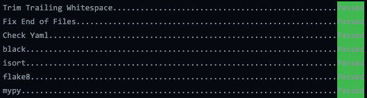

Getting started
Activate e3sm_unified environment
If you have an account on one of the E3SM supported machines (NERSC, Compy, Acme1,
LCRC, Cooley, Rhea), you can access zstash by activating e3sm_unified, which is
a conda environment that pulls together Python and other E3SM tools such as
e3sm_diags.
The paths to e3sm_unified activation scripts are machine dependent:
- Compy
source /share/apps/E3SM/conda_envs/load_latest_e3sm_unified_compy.sh
- NERSC
source /global/common/software/e3sm/anaconda_envs/load_latest_e3sm_unified_pm-cpu.sh
- Anvil
source /lcrc/soft/climate/e3sm-unified/load_latest_e3sm_unified_anvil.sh
- Chrysalis
source /lcrc/soft/climate/e3sm-unified/load_latest_e3sm_unified_chrysalis.sh
- Cooley
source /lus/theta-fs0/projects/ccsm/acme/tools/e3sm-unified/load_latest_e3sm_unified_cooley.sh
- acme1
source /p/user_pub/e3sm_unified/envs/load_latest_e3sm_unified_acme1.sh
- Andes
source /gpfs/alpine/proj-shared/cli115/e3sm-unified/load_latest_e3sm_unified_andes.sh
Change .sh to .csh for csh shells.
Note that e3sm_unified’s development cycle is not in phase with zstash,
therefore the version of zstash included may not be the latest.
To install the latest stable release, refer to the following:
Installation in a Conda Environment
If the E3SM Unified environment doesn’t serve your needs, you can alternatively install the latest version in your own custom conda environment.
First, activate conda or install it if it’s not available. Details vary amongst machines.
Others/Local
If the system doesn’t come with conda pre-installed, follow these instructions:
Download Mambaforge
- Linux
wget https://github.com/conda-forge/miniforge/releases/latest/download/Mambaforge-Linux-x86_64.sh
- MacOS x86_64 (note that
zstashis not supported on MacOS, but it may be useful to contribute to the documentation on MacOS) wget https://github.com/conda-forge/miniforge/releases/latest/download/Mambaforge-MacOSX-x86_64.sh
Install Mambaforge
- Linux
bash ./Mambaforge-Linux-x86_64.sh
- MacOS x86_64
bash ./Mambaforge-MacOSX-x86_64.sh
When you see:
by running conda init? [yes|no] [no] >>> yes
respond with
yessocondaandmambacommands are available on initializing a new bash terminal.
3. If you are working on a machine/network that intercepts SSL communications (such as acme1), you will get an SSL error unless you disable the SSL verification:
conda config --set ssl_verify false binstar config --set ssl_verify False
4. Once conda and mamba are properly working, you can install the (a) Latest Stable Release or create a (b) Development Environment.
(a) Latest Stable Release
Installation using mamba
First, make sure that you’re using bash.
bash
You must have a conda base enviornment installed as well. See “Installation in a Conda Environment” section above for installing conda. Create a new Anaconda environment with zstash installed and activate it:
These steps should not be necessary if you installed Mambaforge as suggested above but may be needed if you have previously installed Miniconda3 instead:
conda install -y -n base mamba
conda config --add channels conda-forge
conda config --set channel_priority strict
Create a new conda environment with zstash installed and activate it:
mamba create -n zstash_env zstash
conda activate zstash_env
Or (less recommended because of potential conflicts) you can install zstash
in an existing environment.
mamba install zppy
Installation on NERSC
After installing on NERSC, you may see improved performance
running zstash on the data transfer nodes (dtn{01..15}.nersc.gov). However, modules are
not directly available there, so you will need to manually activate Anaconda before running
conda activate zstash_env.
Updating
If you installed into your own conda environment (e.g., not through the
unified environment), you can update zstash by doing the following:
mamba update zstash
(b) Development Environment
Unlike the latest stable release (i.e., the user environment), the development
environment does not include zstash.
Instead, the developer will pip install . to build zstash with changes
(see step 6 below).
Furthermore, the dev environment includes quality assurance (QA) tools such as code formatters, linters, and pre-commit.
NOTE: These QA tools are enforced using pre-commit checks in the continuous integration/continuous delivery (CI/CD) build, so you must use the dev environment for all contributions.
Follow “Others/Local” section for installing conda.
Clone your fork and keep it in sync with the main repo’s
main# Go to https://github.com/E3SM-Project/zstash # Click "Fork" in the upper right hand corner. This will fork the main repo. # Click the green "Code" button # Choose the HTTPS or SSH option. # (To use the SSH option, you need to have a SSH connection to GitHub set up). # Click the clipboard icon to copy the path. # On your command line: git clone <path> git remote -v # You should see your fork listed as `origin`
or if you already have a clone of your fork, rebase your fork on the main repo’s
mainto keep it in sync:# Add the main repo as a remote. # You can call it anything but "upstream" is recommended. # We'll use `<upstream-origin>` here. git remote add <upstream-origin> <path from the green "Code" button mentioned above> # Fetch all the branches of that remote into remote-tracking branches git fetch <upstream-origin> # Make sure that you're on your main branch: git checkout main # Rewrite your main branch so that any of your commits that # aren't already in <upstream-origin>/main are replayed on top of that branch: git rebase <upstream-origin>/main # Push your main branch to your GitHub fork: # Note that <fork-origin> should be `origin` if you cloned your fork as above. git push -f <fork-origin> main
Checkout a new branch from
main:git checkout -b <branch-name> <remote-origin>/main
Remove any cached conda packages. This will ensure that you always get the latest packages.
mamba clean --all
Enter the fork’s clone.
cd zstash
5. Use conda to create a new dev environment.
(zstash is not included in this environment).
Tip: Add the flag
-n <name_of_env>to customize the name of the environmentmamba env create -f conda/dev.yml conda activate zstash_dev
Install
pre-commit.pre-commit install
Make the desired changes to
zstash, then rebuild and install with:pip install .
Commit changes and make sure
pre-commitchecks passgit commit -m "commit-message"
pre-commitOutput
Archiving
For archiving E3SM simulations, we recommend following the Best practices for E3SM.